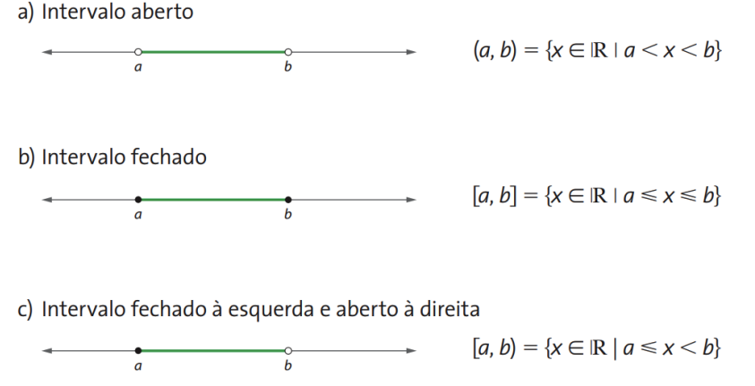

Por exemplo, se temos um conjunto em que os elementos são maiores ou iguais a 2, e menores ou iguais a 4, sendo esse intervalo representado por 2 ≤ x ≤ 4.
Para sabermos se o intervalo é aberto ou fechado existem duas maneiras.
Se conter ( ) ou < > o intervalo é aberto
Se conter [ ] ou ≤ ≥ o intervalo é fechado
Abaixo, mostrarei alguns tipos de intervalos:
Informações retiradas do slide da professora.